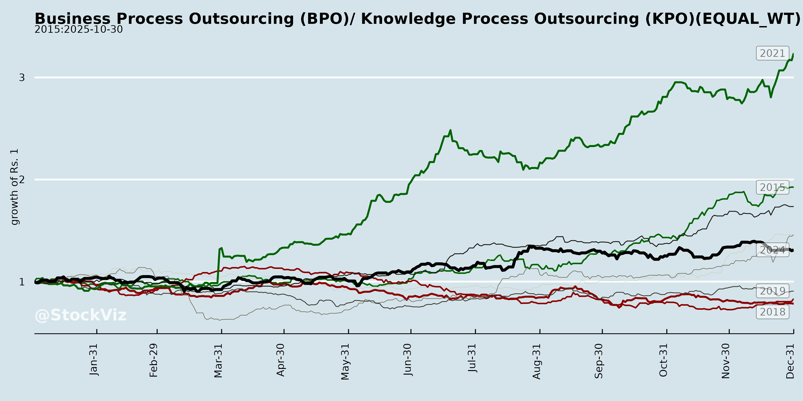
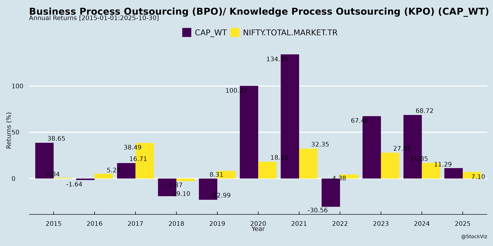
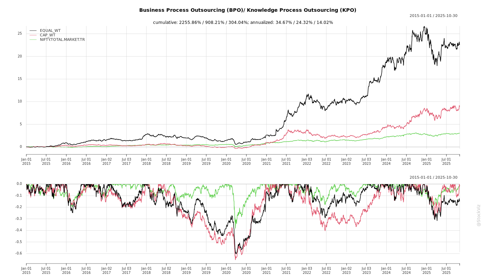
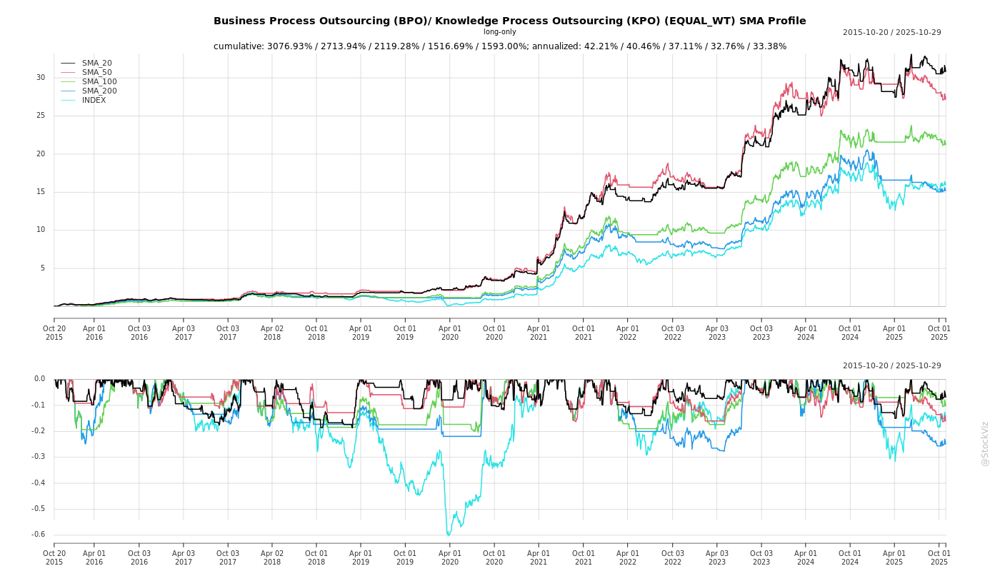
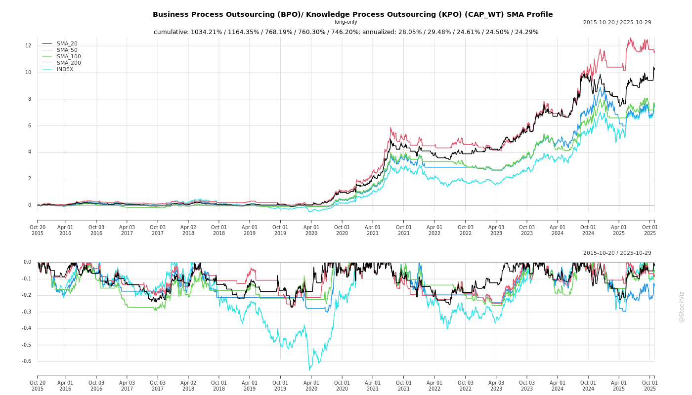
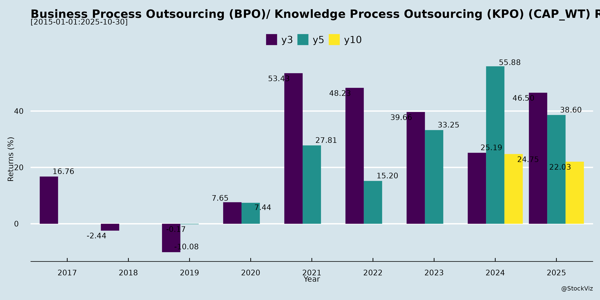

asof: 2025-11-29
Indian BPO/KPO Sector Analysis (Based on Q2/H1 FY26 Earnings Transcripts & Filings)
The analysis draws from transcripts/filings of Firstsource Solutions (strong growth leader), HGS (transformation-focused amid losses), Alldigi Tech (steady performer), and limited updates from eClerx and One Point One (investor meetings, no financials). Sector shows resilience with AI-driven innovation, but uneven performance amid macros. Overall: Moderate growth (10-15% CC YoY), margin pressure easing via tech, but Europe drags.
Tailwinds (Positive Drivers)
| Factor | Evidence/Details | Impact |
|---|---|---|
| AI/Tech Adoption | - Firstsource: UnBPO™ playbook, investments in AppliedAI/Lyzr; AI in mortgages/healthcare; data-as-a-service for top tech firms. - HGS: AgentX (20 clients, 30% margin uplift); solutions like Cloud FinOps, AM Lens (60% false positives cut). - Alldigi: AI in BPM/healthcare; SP4/Smart HR platforms; RCM billing ramp. - Sector: Agentic AI, automation reducing cycle times (e.g., HGS: agent proficiency 10-12wks → 2-3wks). |
High-margin digital services (62% of HGS pipeline); revenue/FTE decoupling from linear headcount growth. |
| Deal Momentum & Pipeline | - Firstsource: 4 large deals (>$5M ACV), 10 new logos (4 strategic), $1B+ pipeline (first time); 22 large deals past 6qtrs. - Alldigi: H1 ACV ₹40Cr (BPM ₹22Cr, Tech ₹18Cr); 16.2L employee records (+10% YoY). - HGS: 35 new contracts H1; multi-tower deals in BFSI/Healthcare. |
Broad-based (non-top-5 clients >50% ACV); strategic logos hitting $5M run-rate fast. |
| Vertical/Geography Diversification | - Healthcare/BFSI traction: Firstsource (payers, collections); Alldigi (RCM Philippines); HGS (healthcare intake). - New markets: Firstsource (Dubai, South Africa, Australia-Monash AI tie-up); Alldigi (Intl 64% mix). - Client dilution: Firstsource top-5/10 share down 6-9% in 8qtrs. |
NA/Europe recovery via nearshore/offshore; non-UK Europe gradual. |
| Operational Efficiencies | - Attrition down (Firstsource 28% T12M, -12ppt in 8qtrs); right-shoring (80% offshore hires). - Margins: Firstsource 11.5% EBIT (+70bps YoY, 4qtr expansion); Alldigi T&D 40%; HGS EBITDA 13% (mid-20s in 5yrs). |
Wage hikes offset; OCF strong (Firstsource 82% EBITDA H1; Alldigi 93% Q2). |
Headwinds (Challenges)
| Factor | Evidence/Details | Impact |
|---|---|---|
| Macro/Geopolitical | - Firstsource: Uncertainties persist despite 6qtr YoY growth; Europe soft (UK muted growth, regs/labor costs → offshore shift). - HGS: Media headwinds (OTT/free TV); stagnant topline (Q2 +0.4% YoY). |
NA healthy (16% YoY Firstsource), but Europe gradual recovery; decision cycles longer. |
| Margin Pressures | - Investments: Sales/leadership hires (Alldigi dip Q1→Q2); wage hikes (Firstsource 90% covered). - HGS: Losses narrowing (PAT -₹27Cr Q2 vs -₹46Cr Q1) but persistent (-₹73Cr H1). |
EBITDA expansion (50-75bps/yr Firstsource/Alldigi) but forex/depreciation offsets PBT (Alldigi dep +50% YoY). |
| Demand Volatility | - Mortgage sluggish (Firstsource: high rates, 88% mortgages <5%); Diverse portfolio flat (UK utilities/retail). - HGS: BPM/digital mix ~55/45; DSO 61 days (imp). |
Project transitions cause QoQ volatility (Firstsource CMT -1%). |
| Execution Delays | - Staggered ramps (Firstsource Healthcare BPaaS Q3+; FCA approvals for collections/Pastdue). | Growth non-linear; H1 organic ~8-10% ex-acquisitions (Firstsource). |
Growth Prospects
Key Risks
| Risk | Details | Mitigation |
|---|---|---|
| Macro/Execution | Geopolitics, rate cuts delay (mortgages); ramp delays/FCA approvals. | Pipeline depth; nearshore (South Africa). |
| Currency/Financial | Forex volatility (HGS gains aid losses); dep/capex rise (Alldigi ₹14.8Cr Q2). | Hedging (Firstsource GBP/USD); strong cash (Firstsource ₹2.9B; Alldigi ₹137Cr). |
| Competition | IT peers’ BPO push; pure-plays vs integrated (Firstsource: pure BPO > IT+BPO per Everest). | Domain depth (Firstsource 39 $5M+ accounts); AI differentiation. |
| Client/Concentration | Top-5 reliance (diluting but HGS top-1 7.6%); DSO creep (Firstsource 69d). | 80-90% growth from existing (HGS); new logos. |
| Talent/Regulatory | Attrition (imp but monitored); tax scrutiny (Alldigi refunds pending); regs (UK FCA). | Upskilling (HGS DigiRise); diversity (Alldigi 48% women). |
| M&A Integration | Pastdue/AppliedAI delays; impairments (Firstsource Ascensos). | Proactive (Firstsource 13/19 strategic logos hit $5M). |
Summary: Sector resilient (10-15% growth, margins 11-13% stabilizing), powered by AI/digital tailwinds and deal pipes, but headwinds from Europe/macros cap upside. Leaders like Firstsource/Alldigi eye high-teens; laggards like HGS need execution. Net Positive: Tech arbitrage > labor; watch H2 ramps/M&A closes for re-rating. Risks tilted macro/execution (medium).
asof: 2025-12-02
Analysis of Indian BPO/KPO Sector: Headwinds, Tailwinds, Growth Prospects, and Key Risks
The provided documents contain Q3 FY25 (ended Dec 31, 2024) and 9M FY25 unaudited financial results from five listed Indian BPO/KPO players: eClerx Services (data analytics/process outsourcing), RPSG Ventures (process outsourcing as a key segment), One Point One Solutions (IT-enabled services), Alldigi Tech (formerly Allsec; CXM/EXM focus), and We Win (call center services). These represent a mix of mid-to-large players with international operations (US, UK, Philippines, etc.). Overall, the sector shows resilient revenue growth (10-40% YoY in most cases) driven by global demand, but faces margin pressures from costs. Consolidated revenues aggregate ~₹32,000 Cr for Q3 across these firms, with healthy PAT in leaders (eClerx, Alldigi).
Below is a structured summary:
Tailwinds (Positive Drivers)
Headwinds (Challenges)
Growth Prospects
Key Risks
| Risk Category | Description | Evidence from Filings |
|---|---|---|
| Operational/Talent | High employee costs (60%+ revenue); attrition in skilled roles. | Universal; RPSG demand order (₹39 Cr GST). |
| Forex/Volatility | OCI forex swings (Alldigi: -₹40 lakhs Q3); export-heavy. | eClerx/Alldigi OCI losses; translation reserves. |
| Regulatory/Compliance | Tax/GST disputes, insider trading codes. | RPSG GST demand; all have PIT policies. |
| Client/Concentration | Dependency on key clients/geos (US 40-50%). | Implicit in geo segments (India dominant). |
| Execution | Integration risks post-M&A; capex heavy (depn up 15-20%). | One Point One ITCube integration; RPSG 50+ subs. |
| Macro | Recession, rupee appreciation eroding arbitrage. | Slow Q3 in some (We Win loss). |
| Financial | Debt rise (finance costs +20%); exceptional items volatility. | Alldigi divestment gains; RPSG losses. |
Overall Summary: The Indian BPO/KPO sector is bullish with strong tailwinds from outsourcing demand and expansions (revenue +15-60% YoY), led by eClerx/Alldigi. Tailwinds outweigh headwinds for scale players, but smaller ones (We Win) face breakeven risks. Growth prospects: 20%+ FY25, fueled by digital services. Key Monitor: Cost control (employee/finance) and forex. Sector resilient, but talent/geopolitical risks loom. Investors should favor diversified leaders with intl. footprint.
asof: 2025-11-30
Summary Analysis of Indian BPO/KPO Sector (Based on Provided Documents)
The documents highlight positive momentum in the Indian BPO/KPO sector, driven by AI-led transformation (e.g., Firstsource’s UnBPO™, One Point One’s AI Voice acquisition), strong Q2FY26 financials (Alldigi Tech), recognitions, and strategic expansions. Companies like Firstsource, Alldigi, and One Point One show robust growth, while others (eClerx, HGS) focus on compliance/AGMs. Below is a structured analysis:
Tailwinds (Supportive Factors)
Headwinds (Challenges)
Growth Prospects
| Metric | Q2FY26 Growth (Alldigi Proxy) | H1FY26 Growth |
|---|---|---|
| Revenue | +12.2% YoY | +11.7% YoY |
| EBITDA | +16.9% YoY | +17.1% YoY |
| PAT | +45.5% YoY | +26.3% YoY (adj. for one-offs) |
Key Risks
Overall Outlook: Strong tailwinds from AI/digitalization outweigh headwinds, with 10-15% sector growth likely in FY26. Focus on UnBPO™/AI outcomes and expansions positions leaders like Firstsource/Alldigi for outperformance, but monitor margins and execution risks.
asof: 2025-11-29
Indian BPO/KPO Sector Analysis (Based on Q2/H1 FY26 Earnings Transcripts & Filings)
The analysis draws from key players: Firstsource Solutions (strong growth leader), HGS (struggling with flat revenue/losses), Alldigi Tech (steady mid-teens growth), One Point One Solutions (high growth via AI/tech), and eClerx (limited data, investor outreach). Sector shows resilience amid macro challenges, with AI/tech as a key differentiator. Overall: Mid-teens revenue growth sustainable, margins expanding 50-150bps YoY via efficiency/AI.
Summary Table
| Aspect | Key Highlights | Outlook (FY26/FY27) |
|---|---|---|
| Headwinds | Macro/geopolitical uncertainty; Europe/UK softness; wage hikes; media losses (HGS). | Persistent but moderating; Europe recovery gradual. |
| Tailwinds | AI adoption (agentic AI, UnBPO); deal wins ($1B+ pipelines); broad-based verticals (Healthcare/BFSI). | Accelerating; tech arbitrage replacing labor arbitrage. |
| Growth Prospects | 13-20% YoY revenue (high-teens CAGR); international mix ↑ (64-76%); new markets/acquisitions. | H2 FY26 acceleration; doubling employee records in 4-5 yrs (Alldigi). |
| Key Risks | Client concentration; regulatory delays; competition from IT peers; forex/inflation. | Medium; mitigated by diversification/AI moats. |
Headwinds (Challenges Slowing Momentum)
Tailwinds (Positive Drivers)
Growth Prospects (High-Teens Trajectory)
Key Risks (Potential Vulnerabilities)
Overall Summary
Indian BPO/KPO remains resilient and growth-oriented (10-20% YoY across leaders), buoyed by AI tailwinds (agentic automation, 30%+ efficiency gains) offsetting macro headwinds (Europe softness, costs). Pure-plays like Firstsource/Alldigi lead with mid-teens growth/margin expansion; HGS lags but narrowing losses via AI/digital pivot. Prospects strong (high-teens CAGR to FY27+ via verticals/geos/AI), but risks tilted macro/execution (mitigated by diversification, $1B+ pipelines). Investors should watch H2 ramps, AI monetization, and Europe recovery for sustained top-decile performance. Sector TTM run-rate ~$10-15B for listed peers, poised for $15-20B by FY27.
asof: 2025-12-02
The provided documents encompass Q1/Q2 FY26 financial results, board outcomes, and announcements from key players like Firstsource Solutions (FSL, RPSG Ventures subsidiary), eClerx, Hinduja Global Solutions (HGS), Alldigi Tech, One Point One Solutions, and We Win Limited. These reflect a resilient sector with YoY revenue growth (e.g., FSL +23.8%, HGS +0.4% QoQ), AI-driven innovation, and deal momentum, amid challenges like high attrition and forex volatility. Overall, the sector shows mid-teens growth potential (FSL guidance: 13-15% CC FY26), fueled by digital transformation.
Projected FY26 Outlook: 12-15% sector growth (revenue ~₹1.5-2tn), margins 10-12% EBITDA, driven by AI deals (20-30% of pipeline).
| Risk Category | Description | Mitigants |
|---|---|---|
| Execution/Operational | High attrition (25-30%); ramp-up delays in new deals. | AI automation; offshore focus; ESOPs for retention. |
| Macro/Economic | Client spend cuts in volatility; US/UK slowdown. | Diversification (Healthcare 33% FSL revenue); multi-year deals. |
| Forex/Financial | Rupee volatility; rising debt costs (FSL finance +37%). | Hedging; FCF strength (FSL +135% QoQ). |
| Regulatory/Tax | GAAR disputes (HGS ₹282cr); SEBI compliance (buybacks/ESOP). | Legal challenges; policy adherence. |
| Competition/Talent | Intense rivalry (eClerx, HGS peers); wage inflation. | AI differentiation; awards/leadership positioning. |
| Cyber/Geopolitical | Data breaches; global ops risks (30+ centers). | Not explicitly addressed; implied in awards. |
Overall Sector Rating: Positive (Buy/Hold). Tailwinds from AI/digital outweigh headwinds; monitor US macro and attrition. Growth hinges on deal conversion (FSL/HGS pipelines strong).
asof: 2025-11-29
Analysis of Indian BPO/KPO Sector: Headwinds, Tailwinds, Growth Prospects, and Key Risks
The provided documents from key Indian BPO/KPO players—Firstsource (FSL), eClerx (ECLERX), Hinduja Global Solutions (HGS), One Point One Solutions (ONEPOINT), and Alldigi Tech (ALLDIGI)—reveal a resilient sector amid digital transformation. Q1/Q2 FY26 results show aggregate YoY revenue growth of ~12-20% (eClerx: 20.2%, Alldigi: 12%, FSL/HGS qualitative strength), driven by AI-led CX, BPM, payroll/HR tech, and global demand. EBITDA margins remain robust (eClerx: 28.8%, Alldigi: 24.4%, ONEPOINT: 27.6%). However, challenges like forex, attrition, and regulations persist. Below is a structured summary.
Tailwinds (Positive Drivers)
Headwinds (Challenges)
Growth Prospects
Key Risks
| Risk Category | Details | Mitigation (from Filings) |
|---|---|---|
| Forex/Volatility | USD/INR/EUR/GBP swings (eClerx hedge $249M; HGS forex losses). | 100% forwards hedging (eClerx). |
| Regulatory/Tax | GAAR disputes (HGS: Rs 282 Cr exposure; writ filed). | Legal advice, no adjustments booked. |
| Talent/Operational | Attrition 17-28% (eClerx/HGS); DSO 76-86 days. | Upskilling (FSL human-centric); utilization focus. |
| Competition/Concentration | Top clients 60%+ revenue; “Contender” vs. “Leader” status. | Diversification (eClerx 44 clients $500k-$1M); awards. |
| Execution/Geopolitical | Global ops (40+ countries/subsidiaries in HGS); economic slowdowns. | Location-agnostic delivery (FSL); cash buffers (eClerx Rs 10B). |
| Cyber/Tech | AI reliance risks; legacy BPO modernization. | Partner ecosystems (FSL); RPA investments. |
Summary: Indian BPO/KPO is in a strong growth phase (tailwinds > headwinds), fueled by AI/digital CX adoption and global outsourcing revival. Prospects are bright (15%+ CAGR potential) for innovators like FSL/eClerx, but risks from forex/tax/attrition warrant vigilance. Sector resilience evident in 20%+ YoY metrics despite macro noise; focus on AI outcomes key to sustaining momentum.
Copyright © 2023 SAS Data Analytics Pvt. Ltd. All rights reserved.